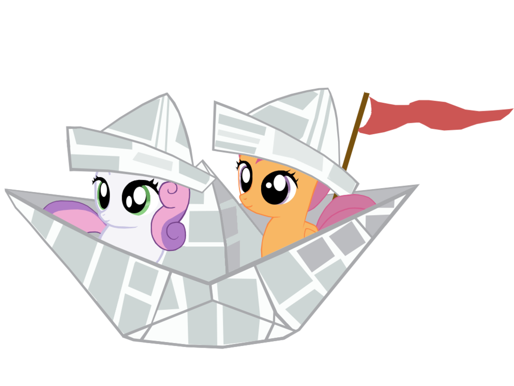

Docker for pentesters
Setting the course
Docker? That light VM thing for developers?
If you're in the industry you've certainly heard the name "Docker" by now. It is often presented as a light VM used by developers to automate deployment and many articles were written along that line.
I'd like to try to present another angle of Docker. I won't delve into its internals, explain how it works or how it can make development and deployment easier. Instead I'd like to show how security professionals can use it in their daily assessments.
Ok, but for pentesters, really?
There are many cases where security professionals need to see an application running. For example it can help eliminate false positives while performing a code review. Having the server running on your own computer also means you are able to track down network streams at will, see what files change in what ways when you perform such and such actions and all this without risking putting the production down.
I use Docker whenever possible when I have a code review to do because while I love reading the code there are many assumptions that are more quickly grasped when seeing it running at least once in its expected configuration.
I also use it when pentesting on a customer's network if I find an open-source application I don't know well. That allows me to quickly see what the default configuration may be, what components it relies on, what the default password is if there's one etc. It also means I'm able to try finding a new vulnerability in that version first before trying it out on the real server.
It can also be useful to quickly try new tools such as web scanners without having to configure them in any way. In 5 minutes the container is up and running and you can start poking at your target.
So what is Docker?
A Docker container is not a VM. It's a way to run a process just like any other on your computer, while lying to it to make it think it's on a whole different environment. This means it's very light as you're just running normal processes and not a completely different system with its own emulated hardware or separate kernel.
This last point also hints at a very important limitation of Docker containers: the kernel is shared between the host and all containers. Any kernel exploit would result in a major privilege escalation.
Furthermore Docker containers can be made public through a common repositories. Well, to be exact the container itself isn't shared, instead a Dockerfile is which is a configuration file used to setup and run a container. This is all very similar to AUR in the Archlinux world and will be transparent to us.
Setting up the container
Installation
Just install it from your favorite package manager and ensure the daemon is running. There's nothing to setup. You may want to add yourself to the docker group to use it as a regular user, but note that it is very useful to elevate your privileges to root if you do so. The basic idea is that since any process in the container is root you can run a container that maps the host's /etc directory and you will have the right to modify /etc/shadow from within the container. Fun stuff.
Important
Having docker available to regular users is equivalent to giving them sudo without password.
Finding a new image
In this example we'll setup an OpenVAS container.
Let's first search the main repository for OpenVAS containers:
$ docker search openvas NAME DESCRIPTION STARS OFFICIAL AUTOMATED mikesplain/openvas A docker container for OpenVAS 77 [OK] combro2k/openvas 3 [OK] ictu/openvas-docker OpenVAS scanscript in Docker container 2 [OK] sergekatzmann/openvas8-complete Docker container for OpenVAS8 1 [OK] [...]
We see many people have been publishing OpenVAS containers. They are sorted by popularity which is measured in stars. We don't have any special requirement so let's just take the first one.
$ docker run --rm mikesplain/openvas
As we've never ran that image before it will download it, configure it and start it. This can take a few minutes. OpenVAS kindly tells us at some point that "your OpenVAS-9 installation is OK" so we must be finished.
The flag --rm is used to automatically remove the container once stopped. Otherwise the container is still present and can be inspected or restarted.
Getting infos
Let's check our running container out:
$ docker ps CONTAINER ID IMAGE COMMAND CREATED STATUS PORTS NAMES 63c489feb707 mikesplain/openvas "/bin/sh -c /start" 8 minutes ago Up 7 minutes 443/tcp, 9390/tcp elegant_lovelace
The name "elegant_lovelace" may be different for you as it is randomly generated. It is just an easier way to refer to the container ID. We also see the application bound the ports 443 and 9390. But what is its IP address?
The "inspect" command is used to gather all sorts of details on our containers.
$ docker inspect elegant_lovelace | grep IPAddress
"SecondaryIPAddresses": null,
"IPAddress": "172.17.0.2",
"IPAddress": "172.17.0.2",
Getting access
Ok, let's connect to our application on https://172.17.0.2/. We're asked for a password but admin/admin isn't that hard to guess. And that's it, we've got it running!
We're not limited to a web interface though, we can also get a shell if needed:
$ docker exec -ti elegant_lovelace /bin/bash root@63c489feb707:/#
As man docker-exec kindly tells us the option -t is used to get a TTY and -i to run the command interactively.
Here we encountered the most common case where the container starts a server that keeps it from shutting down. Sometimes it isn't that easy and the container expects you to open an interactive shell from the start instead in order to configure and run the application. That can be done in our example with:
$ docker run -ti mikesplain/openvas /bin/bash
Exposing the service
At the moment the container runs on a local network, with locally bound ports and an isolated file system. We can extend these capabilities by bounding a port (443) to one on our local machine (here 8443).
$ docker run -p 8443:443 mikesplain/openvas $ docker ps CONTAINER ID IMAGE COMMAND CREATED STATUS PORTS NAMES 63c489feb707 mikesplain/openvas "/bin/sh -c /start" About a minute ago Up About a minute 9390/tcp, 0.0.0.0:8443->443/tcp elegant_lovelace
As we can see the internal port 443 is now exposed on all interfaces of the host on port 8443.
Similarly we can map host directories on container volumes. To do that use the -v flag with absolute paths.
$ mkdir log_openvas $ docker run --rm -v "$PWD/log_openvas:/var/log/openvas" mikesplain/openvas $ ls log_openvas gsad.log openvasmd.log openvassd.dump openvassd.messages
This is especially useful to pass data to containers or inspect log files while the application is running.
Cleanup
Ok, we've played with OpenVAS enough, found a few flaws or whatever, the thing is we're done with it and want it gone. Let's stop it first. We'll then remove the container and the original image to leave a clean system behind us:
$ docker stop elegant_lovelace $ docker rm elegant_lovelace $ docker rmi mikesplain/openvas
And that's it, we're done here. If there is any doubt you can check what stopped containers and images are present with:
$ docker ps -a $ docker images
Sailing away
As we saw, using Docker to quickly install, setup, use and remove a whole application is very easy. Here are all the commands we used:
docker search <application> docker run <image name> docker ps docker inspect <container name> docker exec -ti <container name> /bin/bash docker stop <container name> docker rm <container name> docker rmi <image name>
That's all there is to know from a pentester's point of view. There's much more to Docker than that though as we didn't talk about creating our own images or actually configuring anything: it really is a powerful tool. But all these are beyond the ambitions of our article which I hope was of some help to you.
Happy sailing!
Edit
20/42/2020: I added some new information that people found useful, such as how to mount volumes and expose ports.